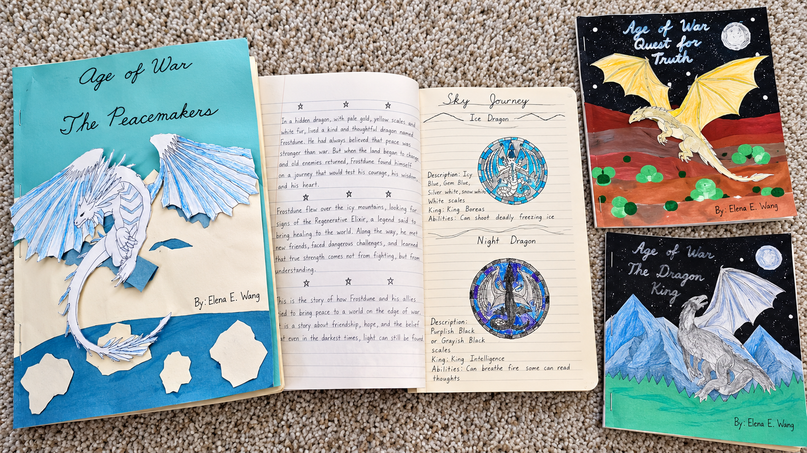

Sharon Wang
English Writing Educator
Sharon Wang has over ten years of experience in education and holds a master's degree in TESL (Teaching English as a Second Language) from the University of San Francisco.
A place for Chinese-speaking learners to grow as confident English storytellers.
StoryBridge English focuses on creative expression and practical English writing skills. Students work toward telling stories with clarity, imagination, and confidence. Lessons can be adapted to learners at different writing levels.
English Writing Educator
Sharon Wang has over ten years of experience in education and holds a master's degree in TESL (Teaching English as a Second Language) from the University of San Francisco.
Young Writer
Elena Wang is a young writer who has written three books and is currently working on her fourth. She brings a young writer's perspective and a passion for storytelling to StoryBridge English.
Explore Elena’s handmade fantasy storybooks, original dragon illustrations, and a video about her creative work.

Discover more about Elena’s stories and her creative writing journey.
Watch on YouTube ↗